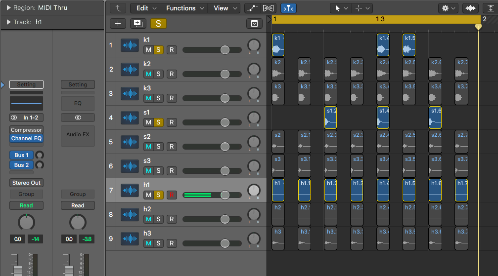
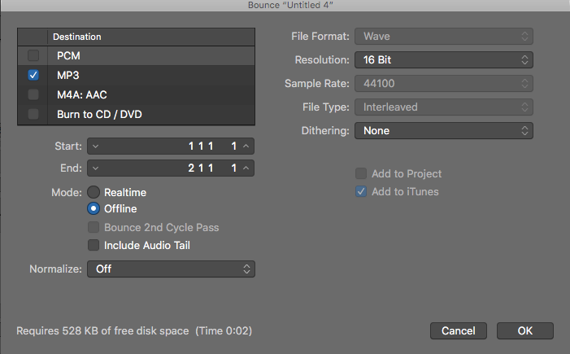
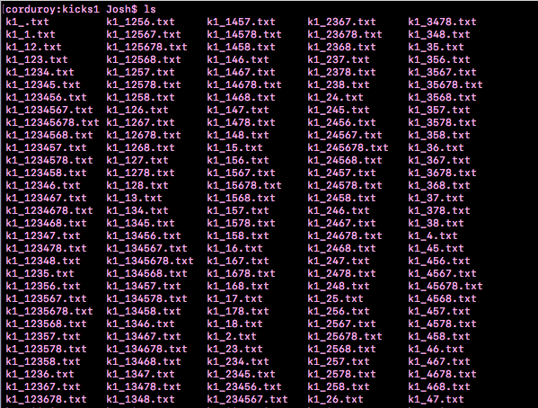

July 10, 2020 — Josh
*record scratch*
*freeze frame*
Yup, that's me. You're probably wondering how I ended up in this situation. Shit wait, that meme doesn't really apply to this situation. Oh well.
Before I get to discussing the namesake of this post, I want to provide some context.
The image above comes from an "interactive story game" I was making as a project for one of my classes (a media class!). One part of the game involved choosing drum sounds, and sequencing them into a loop (the picture is of the latter). I then wanted to play the drum loop back to the user (along with a melodic counterpart).
Ok, how do I create a drum loop based on the user's input? The information I have available to me is:
(1) the filenames of the sounds (e.g. kick1.mp3, snare3.mp3, hihat2.mp3), and
(2) which notes are selected in each row (based on whether the background color is blue).
My initial idea was to have a repository of every possible drum loop the user could make, and then I would simply return the name of the respective drum loop based on the user's input. Alright, so how many audio files is that?
Available sounds:
1 of kick1.mp3, kick2.mp3, kick3.mp3,
1 of snare1.mp3, snare2.mp3, snare3.mp3,
1 of hihat1.mp3, hihat2.mp3, hihat3.mp3
Positions for each sound: 8
There are 256 ways we can arrange a single sound clip (e.g. kick1.mp3) in those 8 positions. Since there are 3 versions of each instrument, and 3 instruments in total, we'd need (256 * 3) * 3 = 2304 files to capture every possible loop for each single sound. Here's what I mean:
1 2 3 4 5 6 7 8
------------------------------------------------------------
k1 | | | | | | | |
k1 | k1 | | | | | | |
k1 | k1 | k1 | | | | | |
... | | | | | | | |
k1 | | k1 | | k1 | | k1 | |
... | | | | | | | |
k3 | | k3 | k3 | k3 | | k3 | |
... | | | | | | | |
s2 | s2 | s2 | s2 | s2 | | | |
... | | | | | | | |
h3 | h3 | h3 | h3 | h3 | h3 | h3 | h3 |
... | | | | | | | |
------------------------------------------------------------
Here's an example of the last row:
And an example of the second row:
The complete table would have 2304 rows in it. And, as you can see/hear, this only considers loops of a single instrument, not ones with all three elements. Can you smell the complexity? Each row can be combined with any other two rows (given that each row is a distinct instrument), which yields... a huge number, man. I don't even know how to calculate that.
Not to mention, I was arranging all of these loops by hand in a graphical environment:

|
Ok, so after about 15 minutes of creating files by hand I knew this would never work. What I did next was what any other sensible person would do -- I rang up my good friend mmvvpp123.
Mmvvpp123 recommended the file-less alternative of looping through all of the "notes" and playing them with JavaScript. This seemed like the right approach, but it did spook me a bit, as I was worried about the drums staying in sync with their accompanying melodies, and I had some uncertanties about how I would implement the process.
This may have been the most scalable and/or best approach, but I never got the chance to find out cause I went to go shower right after our call. Andddd, you know how showers are. By the time I was out, I had a whole plan figured out regarding how I could automate generating audio files.
FFMPEG. I knew that FFMPEG is able to concatenate audio files -- what if I could create loops by concatenating the sounds together? There are 8 beats, each one will either have a sound or silence.
The syntax for doing this with FFMPEG is:
ffmpeg -f concat -safe 0 -i loop_sample2.txt -c copy loop_sample2.mp3
Contents of loop_sample2.txt:
file 'kick1.mp3'
file 'kick1.mp3'
file 'silence.mp3'
file 'silence.mp3'
file 'silence.mp3'
file 'silence.mp3'
file 'silence.mp3'
(This knowledge comes via Miles Wolbe on StackOverflow)
All together, this yields loop_sample2.mp3, which is the audio file with two kicks you heard earlier in the post. This is text! This is automatable!
Buckle up kiddo, we're gonna go for a ride.
Remember those 2304 possible permutations I mentioned earlier? Let's generate all of them! We're going to need 2304 files, each with similar contents to the one above (different arrangements of 1 element from
['kick1.mp3', 'kick2.mp3', 'kick3.mp3', 'snare1.mp3', 'snare2.mp3', 'snare3.mp3', 'hihat1.mp3', 'hihat2.mp3', 'hihat3.mp3']
along with 'silence.mp3').
So, when it comes down to it, the problem is finding all the possible ways we can place 2 distinct elements into 8 spots. I chose to summarize that as generating every possible length-8 arrangement of X and O, such as XXXXXXXX or OOOOOOOO or XOXOXOXO. Once we do that, we can replace every X with a sound clip and every O with silence, and then write that to a file in FFMPEG's preferred format (seen above).
To generate this glorified Tic-Tac-Toe game, I pleaded for help on Discord, and also asked my friend Blake, who quickly got back to me with a Python one-liner:
for i in range(2**8):
print(str(bin(i))[2:].zfill(8).replace("0","O").replace("1","X"))
Ok maybe it's a two-liner, but it's still a one-liner in my heart. That produced 256 lines of Xs and Os (cause as I mentioned there are 256 ways to arrange a sound clip in 8 spots). Each of these lines represents a potential drum loop.
OOXOOXOO
OOXOOXOX
OOXOOXXO
OOXOOXXX
OOXOXOOO
OOXOXOOX
OOXOXOXO
OOXOXOXX
OOXOXXOO
OOXOXXOX
Now, we just have to generate a bunch of files for FFMPEG based on each line of this output. I elected to do this in C++, cause I'm comfy :3 with its IO libraries and I was just trying to get stuff done.
The meat of the work is simple, and done like this:
/* where "sound" is one of ['kick1.mp3', 'kick2.mp3', ... 'hat3.mp3'],
"fout" is writing to a file, and "line" is the string of Xs and Os */
for(int i = 0; i < line.size(); ++i)
{
if(line[i] == 'X') fout << "file '" << sound << "'\n";
else if(line[i] == 'O') fout << "file 'silence.mp3'\n";
}
But, this raises the question of how we should name the files we're generating. I'll borrow a trick from the world of epsilon-delta proofs and work backwards for a second -- let's revisit how exactly our JavaScript program will know which file to fetch based on the user's entered drum sequence.
Recall this image:
We're going to parse this information to decide which filename each row corresponds to:
//filename example: k1_45678.mp3
function generateFilename()
{
//each note is a span element
let notes = document.getElementsByTagName("SPAN");
//where kick, snare, and hihat are file names such as "kick1.mp3"
// (the user selected one of each type previously)
let kick_num = kick[kick.indexOf(".") - 1];
let snare_num = snare[snare.indexOf(".") - 1]; //e.g. 2
let hat_num = hihat[hihat.indexOf(".") - 1];
let kick_filename = "k" + kick_num + "_";
let snare_filename = "s" + snare_num + "_"; //e.g. s2_
let hat_filename = "h" + hat_num + "_";
for(let i = 0; i < 8; ++i)
if(notes[i].style.backgroundColor == "blue") kick_filename += (i + 1);
for(let i = 0; i < 8; ++i)
if(notes[8 + i].style.backgroundColor == "blue") snare_filename += (i + 1);
for(let i = 0; i < 8; ++i)
if(notes[16 + i].style.backgroundColor == "blue") hat_filename += (i + 1);
kick_filename += ".mp3";
snare_filename += ".mp3";
hat_filename += ".mp3";
return [kick_filename, snare_filename, hat_filename];
}
So basically the name format is:
(1) the first letter of the instrument type (k/s/h), followed by
(2) the number of the instrument (as in kick1 vs kick2) (1/2/3), followed by
(3) an underscore, then
(4) the positions of the notes (1 through 8)
Yielding something like k1_45678.mp3.
We can then use this filename as the source for an audio element and play it back to the user (assuming we've pre-generated all of these files and are storing them somewhere).
let kickloop = new Audio(kick_filename);
let snareloop = new Audio(snare_filename);
let hatloop = new Audio(hat_filename);
kickloop.play();
snareloop.play();
hatloop.play();
Voila, now we know how to name our files for FFMPEG!
In other words, let's finish this up. We can now complete our C++ program, which (as a refresher) is cycling through each line of Xs and Os and translating them into files that FFMPEG will use to create loops.
#include <string>
#include <iostream>
#include <fstream>
using namespace std;
// XXOOOOXO --> 127
string rename(const string &line)
{
string name = "";
for(int i = 0, l = line.length(); i < l; ++i)
if(line[i] == 'X') name += to_string(i + 1);
return name;
}
// kick1.mp3 --> 1
string getInstNum(const string &inst)
{
for(int i = 0, l = inst.length(); i < l; ++i)
if(inst[i] == '.') return string(1, inst[i-1]);
}
// reads input from stdin, call with "./a.out 'kick1.mp3'"
int main(int argc, char **argv)
{
string inst = argv[1]; //e.g. kick1.mp3
string prefix = inst[0] + getInstNum(inst); //e.g. k1
ofstream fout;
string line;
while(getline(cin, line))
{
// create a file (e.g. k1_127.txt)
fout.open(prefix + "_" + rename(line) + ".txt");
// fill the file, properly formatting
for(int i = 0, l = line.length(); i < l; ++i)
{
if(line[i] == 'X') fout << "file '" << inst << "'\n";
else if(line[i] == 'O') fout << "file 'silence.mp3'\n";
}
fout.close();
}
}
We provide the input for this program using Blake's beautiful Python one-liner from earlier, which I'll put into the file loops.py.
Calling:
python3 loops.py | ./a.out 'kick1.mp3'
Generates a bunch of files, such as:

Unix is magic. I guess we can simply do this by hand for all of our sounds, cause we only have 9:
python3 loops.py | ./a.out 'kick1.mp3'
python3 loops.py | ./a.out 'kick2.mp3'
python3 loops.py | ./a.out 'kick3.mp3'
python3 loops.py | ./a.out 'snare1.mp3'
python3 loops.py | ./a.out 'snare2.mp3'
python3 loops.py | ./a.out 'snare3.mp3'
python3 loops.py | ./a.out 'hihat1.mp3'
python3 loops.py | ./a.out 'hihat2.mp3'
python3 loops.py | ./a.out 'hihat3.mp3'
And now we can finally invoke FFMPEG to stitch the sounds together and create our drum loops. We'll do that with a shell script:
#!/bin/bash
shopt -s nullglob
mkdir audio_files
for filename in ./*; do
filename="${filename##*/}" # remove path
name="${filename%%.*}"
ext="${filename##*.}"
if [ "$ext" = "txt" ]; then
ffmpeg -f concat -i "$name" -c copy "$name".mp3
mv "$name.mp3" audio_files
fi
done
Did it work? Please tell me it worked...
$ ls -l audio_files/ | wc -l
2305
Off by one error? NOOOOOOO. JK it's fine, I'm not sure where that extra file is coming from but I guess it's no problem. Perhaps my calculations didn't factor in "empty" loops which just consist of silence.
Here's the loop we get by combining k1_156.mp3, s1_37.mp3, and h1_12345678.mp3:
Very satisfying! I can imagine using this technique to automate the creation of somewhat randomized music. Here's a demo of the drum sequencer page you can play with.
Hope this was cool! Warm regards.
ffmpeg -i input0.mp3 -i input1.mp3 -filter_complex amix=inputs=2:duration=longest output.mp3
(That comes via llogan on StackOverflow)
91.8 MB large, with each being ~38 KB large. Not so bad, honestly. Host the files on GitHub and serve them using GitHub Pages!